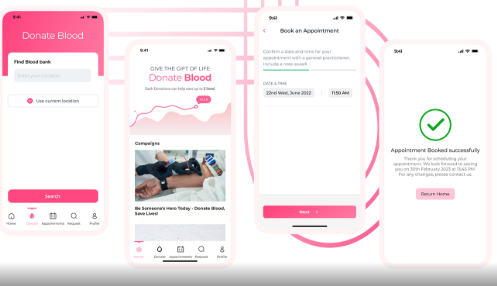

BloodLink – Mobile App Development for Donor Connection
I developed BloodLink as a Flutter and Dart mobile application to address the challenges of blood shortages in Lagos, Nigeria. The app streamlines how donors, hospitals, and blood banks connect in real-time, making blood donation and supply management more efficient.

Goal
Build a reliable mobile-first platform that bridges the gap between donors, hospitals, and blood banks. BloodLink enables scheduling, donation tracking, and distribution, while also educating users on the importance of regular donations.

Challenge
Developing for critical healthcare needs meant ensuring real-time accuracy and reliability. I focused on building donor matching, secure communication, and smooth user flows that both donors and healthcare professionals could trust under pressure.
Result
The result is a responsive, Flutter-based application that improves coordination between donors and hospitals, enhances donation logistics, and helps save lives through better response times. BloodLink also raises awareness and encourages more people to become regular donors.
Tech Stack & Code
Built using Flutter and Dart. Source code available on GitHub.